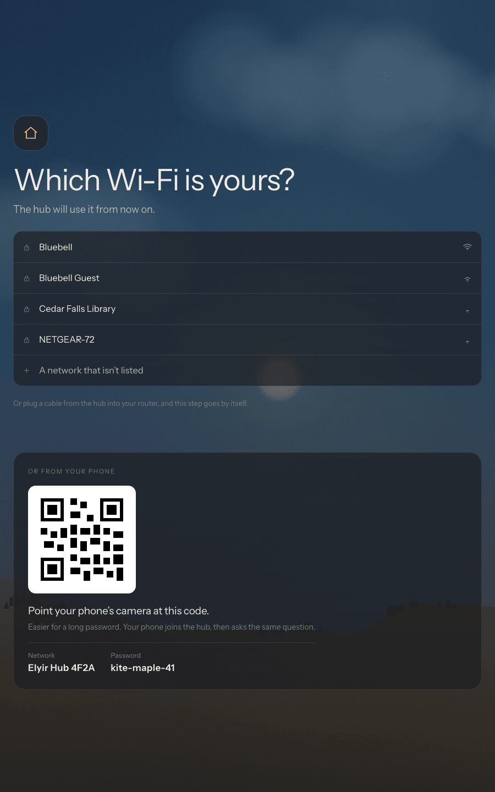
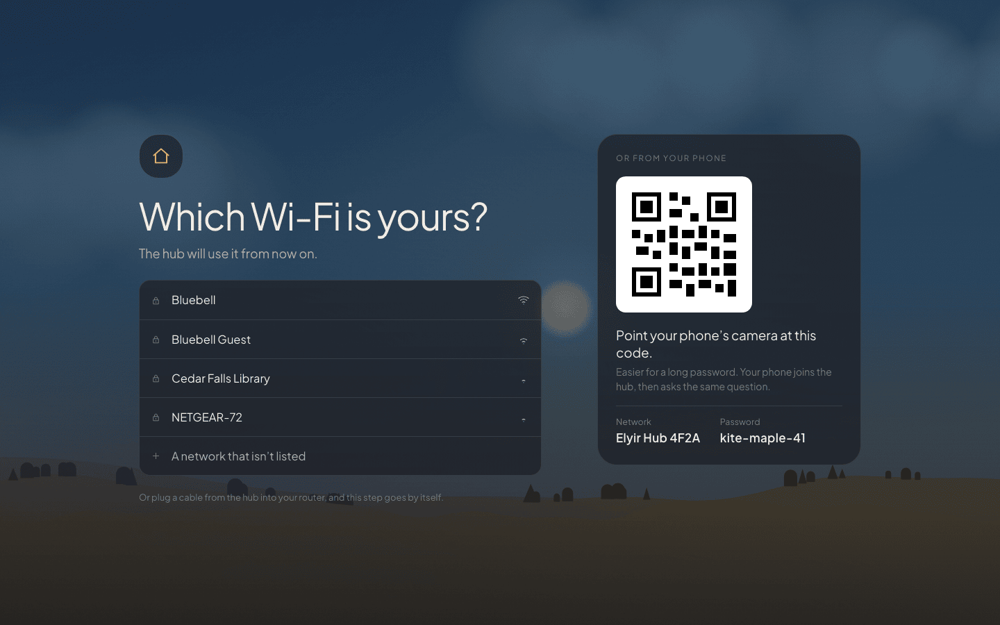

Upside down? Tap to turn it
On its side? Tap to turn it
On its side? Tap to turn it

Turned. Put it back
Upside down? Tap to turn it
On its side? Tap to turn it
On its side? Tap to turn it
Showing
first start, on its side
after the tap
a screen hung the right way